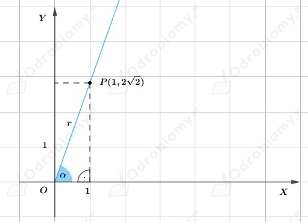

a)
Z treści zadania wiemy, że do ramienia końcowego kąta𝛼  należy punkt P(4,3) zatem ten kąt możemy zobrazować następującoÂ
Obliczenie wartości funkcji trygonometrycznych kąta 𛼠sprowadza się do obliczenia wartości funkcji trygonometrycznych kąta ostrego.
Na podstawie rysunku zauważamy, że przyprostokątne trójkąta prostokątnego mają długości 4 i 3, natomiast długość przeciwprostokątnej r (r>0) możemy obliczyć przy pomocy twierdzenia Pitagorasa.
Zatem
Mając dane wszystkie długości boków trójkąta prostokątnego możemy obliczyć wartości funkcji trygonometrycznych kąta𝛼.Â
   Â
b)
Z treści zadania wiemy, że do ramienia końcowego kąta𝛼  należy punkt P(2,3) zatem ten kąt możemy zobrazować następująco
Obliczenie wartości funkcji trygonometrycznych kąta 𛼠sprowadza się do obliczenia wartości funkcji trygonometrycznych kąta ostrego.
Na podstawie rysunku zauważamy, że przyprostokątne trójkąta prostokątnego mają długości 2 i 3, natomiast długość przeciwprostokątnej r (r>0) możemy obliczyć przy pomocy twierdzenia Pitagorasa.
Zatem
Mając dane wszystkie długości boków trójkąta prostokątnego możemy obliczyć wartości funkcji trygonometrycznych kąta𝛼.Â
   Â
c)
Z treści zadania wiemy, że do ramienia końcowego kąta𝛼  należy punkt P(√5,2) zatem ten kąt możemy zobrazować następująco
Obliczenie wartości funkcji trygonometrycznych kąta 𛼠sprowadza się do obliczenia wartości funkcji trygonometrycznych kąta ostrego.
Na podstawie rysunku zauważamy, że przyprostokątne trójkąta prostokątnego mają długości √5 i 2, natomiast długość przeciwprostokątnej r (r>0) możemy obliczyć przy pomocy twierdzenia Pitagorasa.
Zatem
Mając dane wszystkie długości boków trójkąta prostokątnego możemy obliczyć wartości funkcji trygonometrycznych kąta𝛼.Â
   Â
d)
Z treści zadania wiemy, że do ramienia końcowego kąta𝛼  należy punkt P(1, 2√2) zatem ten kąt możemy zobrazować następująco

Obliczenie wartości funkcji trygonometrycznych kąta 𛼠sprowadza się do obliczenia wartości funkcji trygonometrycznych kąta ostrego.
Na podstawie rysunku zauważamy, że przyprostokątne trójkąta prostokątnego mają długości 1 i 2√2, natomiast długość przeciwprostokątnej r (r>0) możemy obliczyć przy pomocy twierdzenia Pitagorasa.
Zatem
Mając dane wszystkie długości boków trójkąta prostokątnego możemy obliczyć wartości funkcji trygonometrycznych kąta𝛼.Â
Â
   Â